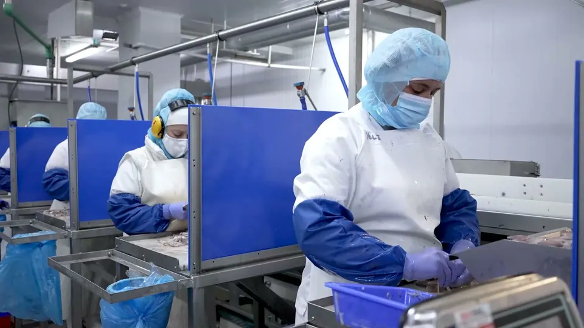

Fileteado y pelado de pescado
Trabajamos a partir de dos tipos de materia prima. El respeto por la materia prima, la precisión y la meticulosidad son nuestros puntos fuertes.
- Desde pescado entero descabezado y eviscerado (HG): fileteado, o fileteado y pelado
- Desde filete fresco o congelado IQF: pelado